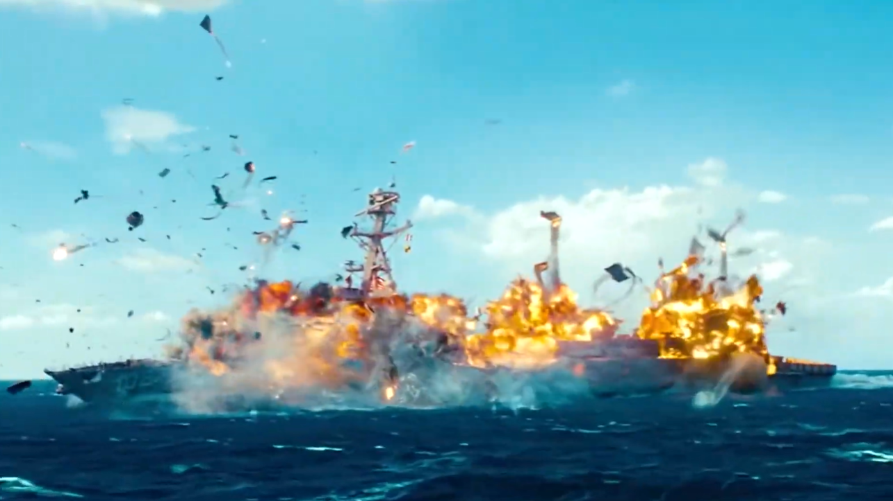
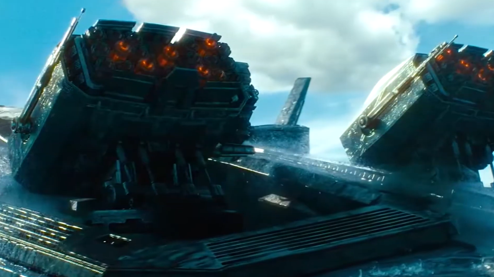
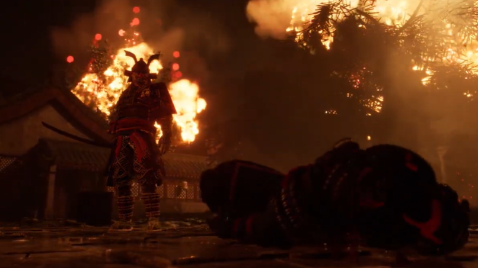

Compositing and Image Integration
Integration of multiple image elements into a cohesive final shot, with attention to colour, lighting, perspective, depth and visual continuity.
VISUAL EFFECTS PRODUCTION
AUTOTUBE CREW STUDIO provides visual effects production for film, advertising and cinematic content. Our capabilities include digital compositing, CGI integration, rotoscoping, cleanup, digital environments and shot finishing.
Visual effects combine captured footage, computer-generated imagery and digital image-processing techniques to create or enhance shots for screen production.
AUTOTUBE CREW STUDIO provides VFX capabilities for cinematic environments, compositing, CGI integration, cleanup and effects-led sequences. These services can support feature films, animation, advertising and other visual productions.
Each assignment is assessed according to its source footage, creative direction, shot requirements, technical specifications and agreed final outputs.
VFX PRODUCTION CAPABILITIES
VFX techniques and shot requirements depend on the source material, creative treatment, production format and approved scope.
Integration of multiple image elements into a cohesive final shot, with attention to colour, lighting, perspective, depth and visual continuity.
Integration of computer-generated assets, objects and environments into live-action footage and digitally constructed scenes.
Digital environment development and set extensions for scenes requiring additional locations, backgrounds, spatial depth or expanded visual settings.
Object isolation, matte preparation and image cleanup to support compositing, visual integration and subsequent post-production work.
Effects elements and digitally enhanced imagery developed to support the visual requirements, scale and narrative context of a production.
Final compositing review, image integration, visual refinement and preparation of approved shots according to delivery specifications.
VFX PORTFOLIO
A selection of visual effects assets from the studio's existing portfolio. Specific production titles, client credits and shot descriptions can be included when verified and approved for publication.







VFX PRODUCTION WORKFLOW
The VFX workflow is adapted to the approved creative scope, available source material, shot complexity and delivery specifications.
Review the creative brief, source footage, visual references, shot requirements and technical specifications.
Organise the source material, assess required visual elements and establish the approach for compositing, cleanup and CGI integration.
Develop and integrate the required visual elements, refine the shots and review image continuity against the approved direction.
Complete final shot checks, address agreed revisions and prepare approved outputs according to the required delivery specifications.
VFX PRODUCTION ENQUIRIES
Share your production brief, source footage, visual references and technical requirements. AUTOTUBE CREW STUDIO welcomes enquiries from film production companies, animation studios, advertising agencies and VFX production partners.
Contact the Studio